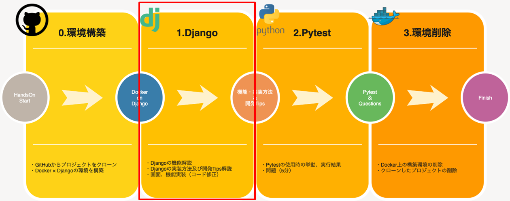

アプリケーションコード修正（商品情報詳細画面）
商品情報詳細画面へ遷移出来るようURL設定を修正し、商品情報詳細画面に対するView機能を実装します。

1. 注意事項
商品情報検索画面作成時に追加／修正したファイルはそのままとしてください。
2. 当画面に関連するソースファイル
- app\product\views\product_detail_view.py ←修正対象
- app\product\urls.py
- templates\product\product_detail.html ←修正対象
- templates\product\product_search.html ←修正対象
3. Template（HTML）の修正
templates\product\product_search.htmlの51Line目付近へ、詳細ボタン押下時に呼び出されるURL定義を追記します。
変更前
<a href="#" type="button" class="btn btn-outline-info" name="detail">詳細</a>
変更後
<a href="{% url 'product:product_detail' pk=object.code %}" type="button" class="btn btn-outline-info" name="detail">詳細</a>
※ここまでの手順で検索画面にて、検索ボタンを押下するとどうなるか見てみましょう。
4. viewの修正
app\product\views\product_detail_view.py に詳細ボタン押下時の処理を実装します。
from app.product.models.product import Product
from django.views.generic import DetailView
class ProductDetailView(DetailView):
model = Product
template_name = 'product/product_detail.html'
5. urls.pyの修正
app\product\urls.py に詳細画面用のviewをインポートし
urlpatternsに詳細画面へ遷移する為のURL文字列とインポートしたviewを設定します。
from django.urls import path
from app.product.views.product_search_view import ProductSearchListView
# 追記
from app.product.views.product_detail_view import ProductDetailView
from django.views.generic import TemplateView
app_name = 'product'
urlpatterns = [
path('', TemplateView.as_view(template_name='product/product_top.html'), name='top'),
path('search/', ProductSearchListView.as_view(), name='product_search'),
# 追記
path('detail/<int:pk>', ProductDetailView.as_view(), name='product_detail'),
]
ポイント
WEBサイトの多くは
- DBからの情報を絞り込んで検索結果を表示する
- 検索結果の内、単一の情報の詳細内容を表示する
- 画面に入力された内容を元にDBへ情報を登録・更新する
という機能を持っています。
上記のような定型的な処理について、同じようなコードを書かなくても済むようあらかじめDjangoに処理が定義されています。
その処理のことを汎用ビューと呼び、関数で定義されていれば「関数ベース汎用ビュー」、クラスで定義されていれば「クラスベース汎用ビュー」と呼びます。
クラスベース汎用ビューの内、何点かピックアップして紹介します。
DetailView
個別詳細ページ実装時に使用する汎用ビューとなります。 modelに定義されたテーブルより、URLに指定されたプライマリーキーを元に絞り込まれたレコードを1件取得します。
<実装例>
views.py
from django.views.generic import DetailView
from mymodel.model import MyModel
class MyDetailView(DetailView):
model = MyModel
urls.py
urlpatterns = [
path('<int:pk>', MyDetailView.as_view()),
]
CreateView／UpdateView
CreateViewは、新たにレコード追加するフォームを定義することが出来るビューとなります。
UpdateViewは、すでに存在するデータを更新するフォームを定義することが出来るビューとなります。
form_valid,form_invalidというメソッドが定義されているので、エラーの有無によって独自の処理を実施することが可能です。
views.py
from django.views.generic import CreateView
from mymodel.model import MyModel
from forms import MyModelForm
class MyCreateView(CreateView):
model = MyModel
form_class = MyModelForm
def form_valid(self, form):
''' 入力内容チェックにエラーがない場合 '''
messages.success(self.request, "保存しました")
return super().form_valid(form)
def form_invalid(self, form):
''' 入力内容チェックにエラーがある場合 '''
message.warning(self.request, "保存できませんでした")
return super().form_invalid(form)
forms.py
from django import forms
from mymodel.model import MyModel
class MyModelForm(forms.ModelForm):
class Meta:
model = MyModel
exclude = ['create_at', 'update_at', 'create_user', 'update_user',]
urls.py
urlpatterns = [
path('create/', MyCreateView.as_view()),
]
6. 画面確認
以下URLをブラウザへ入力し画面を表示します。
商品情報検索結果に表示された詳細ボタンを押下すると、作成した商品情報詳細画面へ遷移するようになります。